K lets a customer post with no fixed date. J: when a date passes with nobody picked, the task switches to "No fixed date" by itself and stays open; the customer is told, and a worker can offer with their own finish date. (Redrawn 25 Nov from your note.) Nothing below is live yet. The work is paused on its branch until you say "build J" or "build K".
The date step in "Post a request" is now called "Close this task by". "No fixed date" is the first choice and is picked by default. A custom day and time is still there at the bottom of the list.
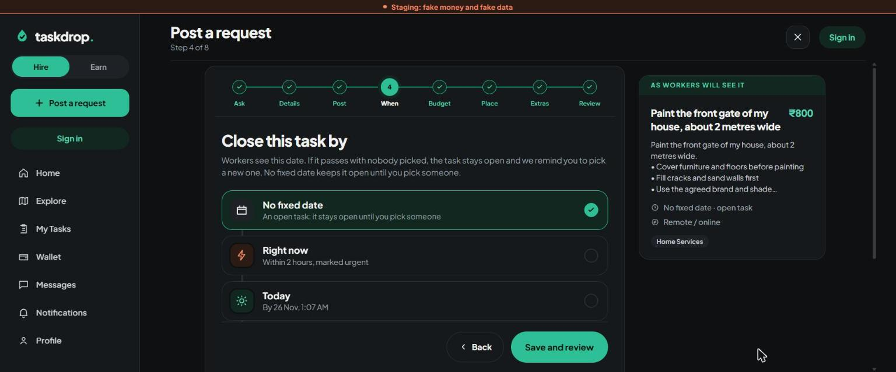
Today a task disappears from Find work, the map, Nearby, search and the guest lists once its date passes. With J, if nobody has been picked by then, the task switches to "No fixed date" by itself, within 15 minutes. It stays open and visible everywhere, like any other open task. Workers can still send offers and say when they can finish. City Hunts keep their own dates and are left out.
On every task with no fixed date (posted that way, or switched after its date passed), the offer form asks "When can you finish it?". Giving a date is optional. The customer sees it on the offer and in the new-offer notification. If they accept that offer, the task's date becomes the worker's date. Prices and fees do not change.
Your note of 26 Nov. When a worker sends a counteroffer, they can also say when they will finish. Task with no fixed date: "By a date" (a date and time) or "In hours" ("I can finish in 3 hours"). Task with a date: the customer's date shows. The worker can keep it, or tap "Ask for more time" and pick a later date, with a short message saying why. The customer sees it on the offer, and accepting it moves the task's date. Prices and fees do not change.
Taken from a local web build of PR 511 against the staging data, phone (375×812) and web (1440×900), Earn mode. Staging had no open task without a date at the time, so the dates were blanked in that browser tab to show the "No fixed date" state. The worker screens match the design above.
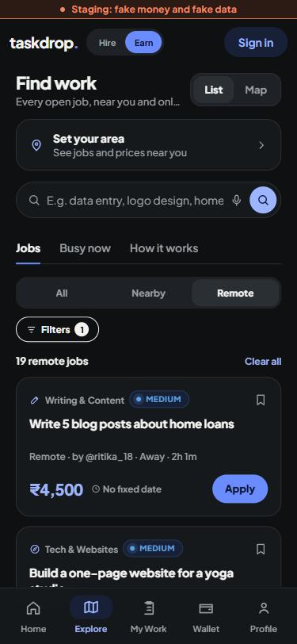
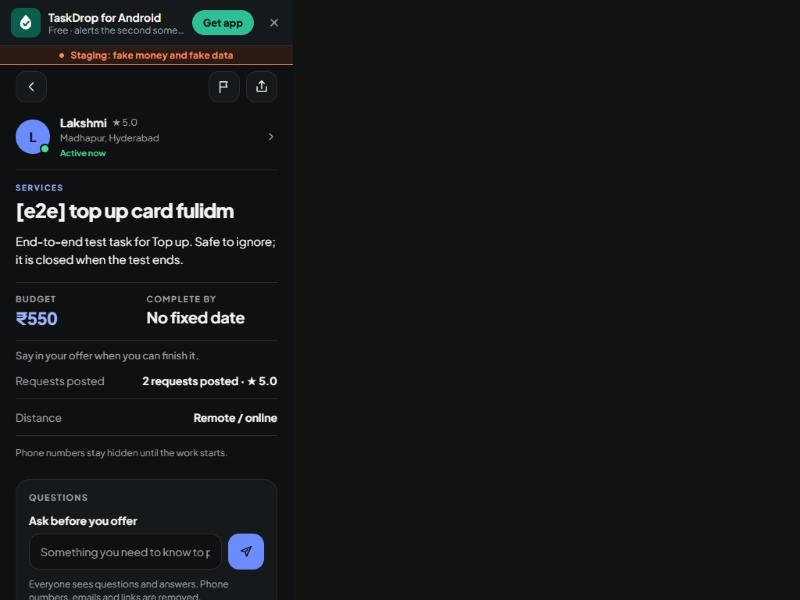
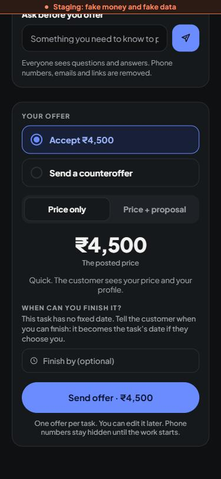
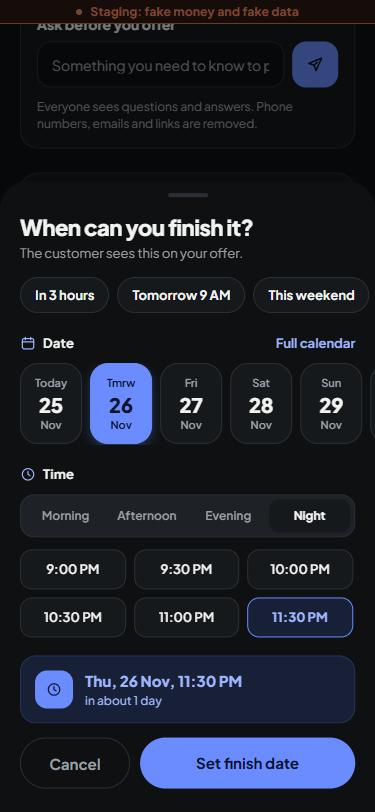
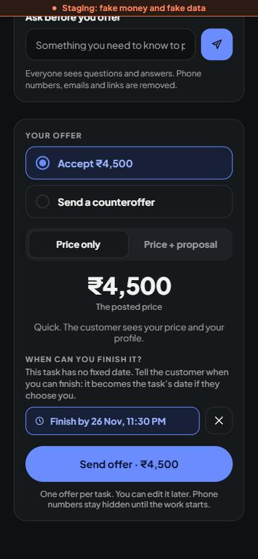
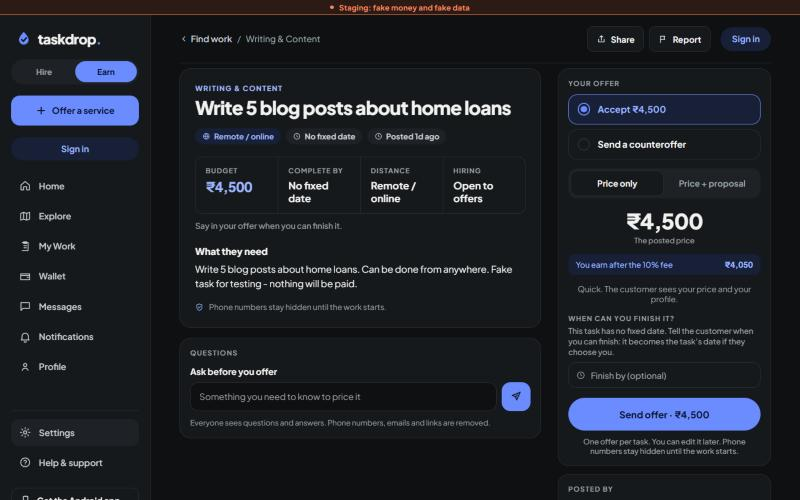
Differences from the design, and why:
Local web build of PR 511 against the staging data, Earn mode, phone (375×812) and web (1440×900). The same picker is on the offer panel of the task page and in the offer sheet.
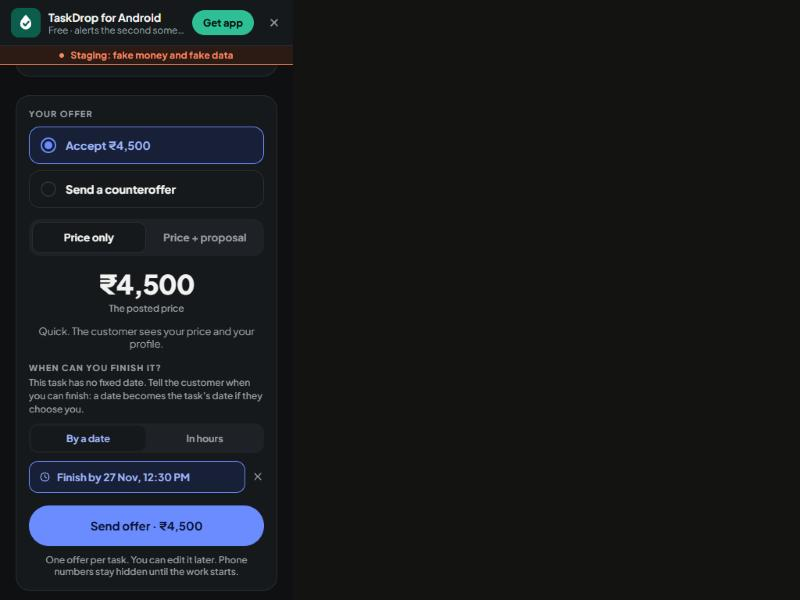
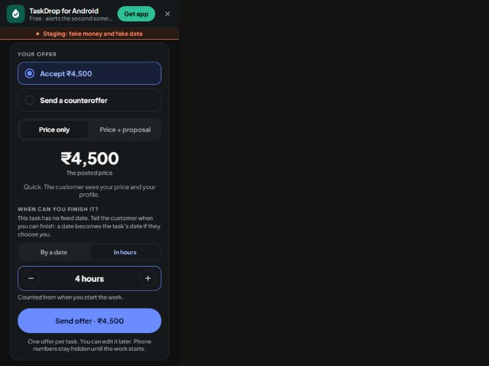
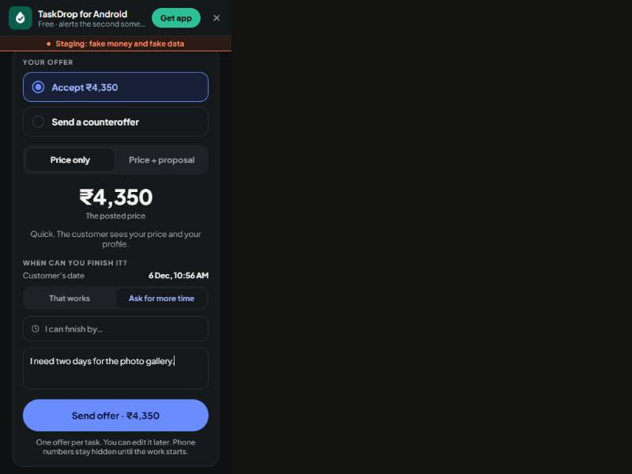
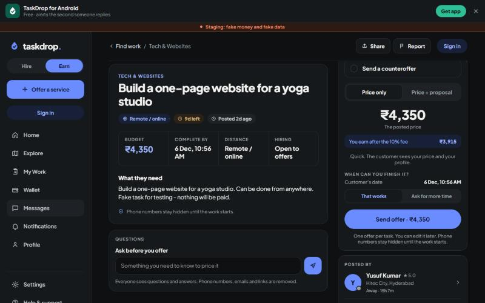
Differences from the design, and why:
"In hours" uses 1 hour to 7 days. Say if you want a different range.
Rows J, K and the counteroffer are merged (PR 511, 26 Nov). Migration 216 reaches staging with the next Vercel build (build limit, about 24 h); the customer screens ("Can finish by", "Asks for more time", the date-passed banner) are checked live after that.